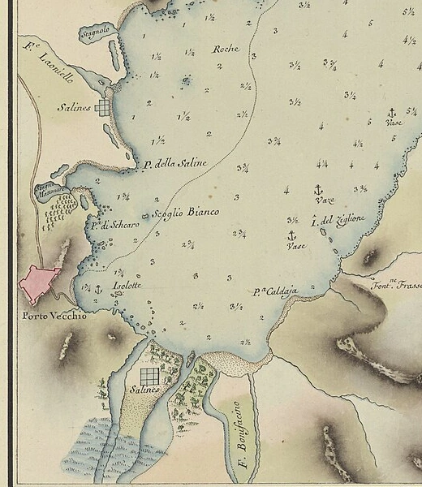

Regardez-la une dernière fois avant que le temps ne remonte. Pour comprendre comment cette ville est née, il faut d’abord l’effacer — ôter les maisons, les quais, et revenir à la pierre nue.
À mesure que vous lirez, le jour passera sur le golfe, les cartes anciennes viendront recouvrir le relief, et le rivage changera sous vos yeux jusqu’au soir.
Chì và è volta, bon viaghju face.
Vous lisez la version en images fixes, sans mouvement.
I Avant la ville
Le rocher
Au commencement, il n’y a qu’un golfe profond, refermé sur lui-même. Au fond de l’eau se dresse un éperon de porphyre rose ; derrière lui, la montagne se lève presque aussitôt.
Son nom vient de loin : Portivechju, le port vieux. Six siècles avant notre ère, dit-on, des Grecs de Syracuse y mouillaient déjà ; Rome l’appelait Portus Syracusanus.
Un port, donc, mais pas de ville. La plaine a beau être fertile, personne n’ose y dormir : les marais donnent la fièvre. L’hiver seulement, les bergers descendent des hauteurs avec leurs troupeaux.
Le reste du temps, écrit l’évêque Giustiniani au XVIe siècle, « les fustes des corsaires trouvaient dans ce canal un endroit excellent pour se cacher ».
Descendre l’hiver, remonter dès les chaleurs : ce va-et-vient entre la montagne et la mer est le premier battement de ce pays. Il y en aura d’autres.
II 1539 – 1589
La citadelle
« C’est pour leur fermer cet asile que l’Office de Saint Georges fit bâtir là un village qu’il peupla lui-même. » En 1539, Gênes décide de fermer ce refuge. Ses envoyés débarquent l’été suivant, cherchent un site et choisissent la hauteur du rocher.
De 1541 à 1544, les remparts montent sur un plan d’Olgiati, défendus par cinq bastions : de France, Saint-Georges, du Palais, San Antonio et de la Porte.

Mais la ville ne tient pas. Sampiero Corso s’en empare à l’été 1564 ; l’année suivante, tout est rasé. En 1578, plus de cent familles venues de Vintimille la relèvent et la rebaptisent Ventimiglia la Nuova. Quelques années plus tard, elles repartent à leur tour.
Les pierres résistent, trois fois reconstruites avant 1589, jamais modernisées depuis — on voit encore aujourd’hui le bastion de France et la porte génoise. Ce qui manque encore, ce sont des gens pour y rester.
III XVIIe siècle
Ceux d’en haut
Alors Gênes lève les yeux vers la montagne. Ce sont des familles d’en haut, de Quenza surtout, qui descendent enfin habiter la citadelle. Au XVIIe siècle, Porto-Vecchio devient une ville de montagnards.
Les deux noms de cette lettre viennent eux aussi de ces sommets : les Rocca Serra, de Serra-di-Scopamène dans l’Alta Rocca ; les Abbatucci, de Zicavo, au pied de l’Incudine.
Ils tiennent la ville, mais jamais toute l’année. Chaque été, quand la fièvre revient sur la plaine, on ferme les volets et l’on remonte vers la fraîcheur — vers Quenza, Zonza, Levie, l’Ospédale. À l’automne, on redescend. Des générations vivent sur ce souffle.
Une ville qui survit parce qu’elle accepte de se vider. Ici, partir n’a jamais été le contraire d’appartenir.
L’acqua và à u mare.
IV Le départ
13 juin 1769
1769 : l’année même où l’on commence à dresser le Plan Terrier, première carte précise de ce rivage, le golfe voit le plus célèbre de ses départs.
Le 13 juin, vaincu à Ponte Novu, Pasquale Paoli embarque ici sur un navire anglais, direction Livourne et l’exil. Quelque trois cents fidèles prennent la mer avec lui.
L’homme qui a protégé sa retraite descend de Zicavo. C’est Jacques Pierre Abbatucci — un médecin devenu général, que Paoli avait autrefois fait emprisonner avant de lui confier tout le Sud. Dans la mémoire de la famille, c’est lui qui l’a escorté jusqu’à ce port.
Paoli reviendra en juillet 1790, vingt et un ans plus tard, puis une dernière fois en 1889 quand ses cendres regagnent Morosaglia. Mais le fils du vieux général, Jean-Charles, ne rentrera jamais : général à son tour, il tombe à vingt-six ans devant Huningue, en 1796. Son nom est gravé sous l’Arc de triomphe.
En marge : les Abbatucci de Zicavo
- Jacques Pierre (1723–1813), « le vieux général » : vainqueur à Borgo en 1768, puis général de division de la Révolution. Trois de ses fils meurent au service de la France.
- Jean-Charles (1770–1796), tué à Huningue ; Jacques-Marie Séverin, mort en 1794 des blessures reçues au siège de Calvi ; Antoine Dominique, tué en Égypte en 1798.
- Jacques Pierre Charles (1791–1857), petit-fils du vieux général, garde des Sceaux de 1852 à 1857.
- Séverin (1821–1888), fils du garde des Sceaux, maire de Zicavo et député de la Corse.
V 1795 – 2000
Le sel
Au pied du rocher, là où le Stabiacciu se jette dans le golfe, l’eau dort dans les marais. Gênes, qui gardait le monopole du sel, n’en avait jamais voulu ici.
En 1795, les Rocca Serra reçoivent enfin le droit d’y aménager des salines. Elles viennent tard, et seront les dernières de toute l’île à travailler.

Sur le plan levé en l’an XI, elles dessinent déjà deux damiers au bord de l’eau. On y récolte le sel pendant deux siècles, jusqu’en 2000 — jusqu’à deux mille tonnes par an dans les années 1950.
C’est le même temps où le nom entre à la mairie, en 1803, avec Vincente Maria Rocca Serra, pour y rester presque sans interruption. Le sel conserve ce qu’on lui confie : et l’eau calme qui ouvre cette lettre, où la vieille ville se regarde à l’aube, est celle de ces bassins.
En marge : les Rocca Serra
- Au XVIe siècle, à Serra-di-Scopamène, la descendance de Giovan Paolo della Rocca devient « della Serra », puis « Rocca Serra ». La noblesse de la branche de Porto-Vecchio est confirmée le 14 janvier 1772.
- Maires de Porto-Vecchio : Vincente Maria (1803–1814), Anton « Camillo » (1821–1826), Leopoldo (1839–1845), Giulio Maria (1848–1854), Horace (1872–1876, 1888), Jean-Paul (1876–1877).
- Puis le docteur Camille (1880–1963), u sgiò Cameddu ; son fils Jean-Paul (1911–1998), maire de 1950 à 1997 ; et Camille (né en 1954), maire de 1997 à 2004.
VI 1876 – 1975
Le liège
Un siècle passe, et la ville change de métier. Sur la Marine, depuis 1876, l’usine Saint-Joseph travaille le liège des collines — bouchons, flotteurs de filets, plaques d’isolant.
On lève l’écorce au cœur de juillet, sous la chaleur lourde, au moment même où il faudrait déjà avoir gagné la montagne.
Le chêne-liège a ceci de rare qu’on le dépouille sans jamais le tuer. Nu, son tronc rouge orangé affronte le soleil ; dix à douze ans plus tard, l’écorce est revenue.
L’usine ferme en 1975, vaincue par le plastique. Aujourd’hui, entre ses murs, on joue du théâtre.
Chêne-liège en Corse. Photographie : JCMEL, CC BY-SA 4.0.
En marge : les mûriers
Le liège n’est pas le seul arbre que l’on ait demandé à cette terre. Le 28 août 1548, le gouverneur génois ordonne à chaque propriétaire et à chaque fermier de Corse de planter, tous les ans, quatre arbres : un châtaignier, un olivier, un figuier, un mûrier — trois livres d’amende pour chaque arbre manquant. D’autres ordonnances suivront, en 1619, en 1626, en 1646.
Le mûrier promettait autre chose : ses feuilles sont la seule nourriture du ver à soie. Entre 1773 et 1789, l’une des quatre pépinières royales de mûriers de l’île est installée à Porto-Vecchio. En 1857, on élève des cocons jusque dans le Sud, à Sartène et à Porto-Vecchio, et l’on dit que la soie corse, née de vers épargnés par la maladie qui ravageait le continent, a gagné les soieries de Lyon.
La Corse n’est jamais devenue une grande terre de soie : la même année, un rapport la classe au dernier rang des départements producteurs, et la Grande Guerre achève de vider les magnaneries. Il arrive encore, au bord d’un chemin, de croiser un vieux mûrier que plus personne ne cueille.
1935
En septembre 1935, même le train finit par descendre jusqu’ici, reliant Porto-Vecchio, terminus de la côte orientale, à Bastia — cent cinquante kilomètres et cinq heures de voyage.
Il ne connaîtra que huit étés. Au soir du 8 septembre 1943, les bombardements coupent la voie. Elle ne rouvrira jamais.
VII 1925 – 1953
La fièvre
Voici l’anse de la Marine au lendemain de la guerre, encore sauvage, presque nue. Pourtant, le vieux mal qui vidait cette plaine depuis quatre siècles vient tout juste de reculer.
Entre les deux guerres déjà, une mission financée par la fondation Rockefeller avait étudié le paludisme jusque dans les bras du Stabiacciu. Le maire d’alors était un médecin, Camille de Rocca Serra, qui appuyait cette lutte à la Chambre.
1975
Au printemps 1949, l’État lance sa grande campagne contre les moustiques et commence par le secteur de Porto-Vecchio. D’après un rapport de 1950, les analyses positives y tombent d’environ deux cents en 1947 à quatre en 1949. En 1953, l’île ne compte plus un seul cas nouveau.
En juin 1950, le fils de Camille devient maire à son tour, médecin lui aussi : Jean-Paul de Rocca Serra. Il restera quarante-sept ans à la tête de la ville, tandis que le rivage se couvre de digues et de pontons.
2024
Les digues s’avancent, les quais se dessinent, la marina s’ouvre. Une même anse, méconnaissable.
Pour la première fois de son histoire, on n’a plus besoin de fuir Porto-Vecchio quand vient la chaleur. On peut enfin y passer l’été.
VIII Depuis 1950
L’été
Alors les saisons se retournent. Pendant trois siècles, l’été chassait les habitants vers les hauteurs ; désormais, c’est l’été qui les ramène vers la mer. En une vie d’homme, la ville fait plus que tripler.
- 1946
- 3 339
- 1975
- 7 510
- 2023
- 11 198
Habitants de la commune (recensements).
Palombaggia, Santa Giulia, Cala Rossa. Là-haut, à l’Ospédale, un lac retient depuis 1979 l’eau qui descend abreuver la côte : aujourd’hui encore, c’est la montagne qui fait vivre la plaine.
Chaque été, des milliers de gens refont sans le savoir un très vieux chemin. Mais vous, vous ne venez pas voir cette mer. Vous venez la retrouver.
Hè megliu ghjente cà arghjentu.
Palombaggia vue du ciel. Photographie : dronepicr, CC BY 2.0.
IX La nuit du 31 juillet
Le soir
Le soir du 31 juillet, la vieille ville allume encore un vieux feu. On y promène Luddareddu, « petit juillet », un mannequin de paille et de liège vêtu de velours. On le juge, on le pend, et à minuit on le brûle devant l’église.
Autrefois, juillet était le mois le plus dur — celui du liège, des foins, du battage et du sel, où les hommes restaient seuls en plaine pendant que les familles étaient déjà au frais. Brûler juillet, c’était fêter le jour où l’on pouvait enfin remonter.
« O Luddareddu chì ti ni vai ! »
On le brûle toujours, dans une ville où l’on vient désormais passer l’été.
X Deux rues
La maison
Approchez-vous encore. Là-haut, le long des vieux murs génois, une ruelle — un carrughju — porte le nom du docteur Camille de Rocca Serra. Marchez jusqu’au bout. Elle ne s’arrête pas : sans même tourner, elle devient la rue du Général-Abbatucci.
Ce n’est pas un hasard de pierre. Le docteur Camille est né le 16 août 1880 à Zicavo, le village des Abbatucci — sa mère portait leur nom.
Les deux noms de cette lettre ne font qu’une seule histoire. Depuis longtemps déjà, la montagne et la mer s’étaient épousées.
La voici, à hauteur de pas. Ici, les cartes s’arrêtent sur le seuil : ce qui se vit derrière ces pierres n’appartient qu’à ceux qui y entrent.
Déjà, dans cette rue, des volets se sont rouverts.
A casa piglia, a casa rende.
La rue du Docteur-Camille-de-Rocca-Serra. Photographie : Patrick Nouhailler, CC BY-SA 3.0 (plaque d’immatriculation floutée).
En marge : les maisons d’Américains
Entre 1800 et 1920, près de quatre mille Corses partent pour l’Amérique — à Porto Rico surtout, au Venezuela, à Saint-Thomas, en Haïti, jusqu’aux États-Unis. Ils fuient la misère, les mauvaises récoltes, puis le phylloxéra. Certains ont quinze ans.
Quelques-uns font fortune, et reviennent. Ils bâtissent alors, au-dessus de leur village, les « maisons d’Américains », i palazzi : de hautes demeures carrées, à colonnes et à grandes fenêtres, qui disent de loin que l’on est revenu. On en compte plus d’une centaine dans le seul Cap Corse.
C’est surtout une histoire du Nord ; le Sud n’y a pris qu’une part modeste. Mais le geste, ceux qui lisent cette lettre le connaissent : partir loin, et revenir un jour pour bâtir, ou simplement rouvrir, une maison au pays.
— La nuit
Envoi
La nuit est tombée sur Portivechju. Des fenêtres s’allument au-dessus des salines.
Ici, tout le monde est parti, et tout le monde a retrouvé le chemin — les bergers, les gens d’en haut, Paoli lui-même. Alors si vous lisez ceci de loin, ne vous croyez pas de passage. Vous êtes simplement le prochain retour.
Un jour, vous arriverez ici. Vous ne reconnaîtrez rien, et tout vous reconnaîtra.